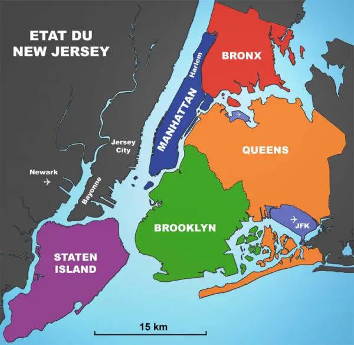

Les quartiers New Yorkais
New york est une ville de classe mondiale. Chacun de ses quartiers a sa propre histoire en voici quelques uns:
Manhattan
Manhattan est le cœur battant de New York, réputé pour son énergie unique et ses gratte-ciel emblématiques. Abritant Times Square, Central Park, et Wall Street, il est à la fois le centre financier, culturel et touristique de la ville. De l'élégant Upper East Side aux rues animées de Greenwich Village, chaque quartier de Manhattan a sa propre identité. L'île est aussi le foyer de musées de renommée mondiale comme le Metropolitan Museum of Art et le MoMA, ainsi que de nombreux théâtres de Broadway. Manhattan incarne le rêve new-yorkais, attirant chaque jour des millions de visiteurs et d'habitants avec sa diversité et son dynamisme sans fin.
Brooklyn
Brooklyn est un quartier vibrant et diversifié qui mêle héritage historique et innovation moderne. Connue pour ses quartiers branchés comme Williamsburg, où l’art, la musique et la mode s'entremêlent, Brooklyn attire de nombreux artistes, jeunes professionnels et familles. Le quartier de Dumbo offre des vues spectaculaires sur Manhattan, tandis que Brooklyn Heights, avec ses rues bordées de maisons en grès brun, est un havre de tranquillité au bord de l’East River. Coney Island ajoute une touche rétro avec son parc d'attractions en bord de mer, tandis que Prospect Park et le Brooklyn Museum enrichissent la vie culturelle. Dynamique et accueillant, Brooklyn est une véritable mosaïque culturelle de New York.
Le Queens
Queens est le borough le plus grand et le plus diversifié de New York, abritant des communautés du monde entier, ce qui se reflète dans sa cuisine, sa culture et ses quartiers. Astoria, réputé pour ses influences grecques et ses brasseries, attire les amateurs de cuisine et de culture. Flushing est un centre animé de la culture asiatique, avec des restaurants authentiques et un quartier chinois qui rivalise avec celui de Manhattan. Long Island City, en bordure de l’East River, offre des vues imprenables sur la skyline et une scène artistique florissante avec de nombreuses galeries. Avec ses espaces verts comme le Flushing Meadows Corona Park, où se trouve l'iconique Unisphere, et ses quartiers résidentiels paisibles, Queens représente la diversité et l’ouverture de New York.
Le Bronx
Le Bronx, situé au nord de New York, est riche en histoire et en culture, et il est le berceau du hip-hop. Ce borough vibrant est célèbre pour ses sites emblématiques, comme le Yankee Stadium, temple du baseball, et le Bronx Zoo, l'un des plus grands zoos urbains du monde. Fordham abrite également le magnifique New York Botanical Garden, un espace verdoyant où se déroulent de nombreuses expositions. La Petite Italie du Bronx, à Belmont, est connue pour ses épiceries et restaurants italiens traditionnels. Entre ses racines urbaines, ses espaces verts et son dynamisme culturel, le Bronx incarne l'âme authentique et résiliente de New York.